Страны, где я хотела бы жить

Страны мечты Страны мечты Страны мечты Страны мечты Страны мечты
| Страна | Дания | Норвегия | Финляндия | Швеция |
|---|---|---|---|---|
| Флаг | 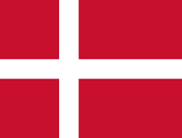 | 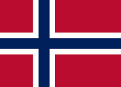 | 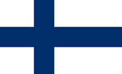 | 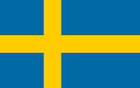 |
| Герб | 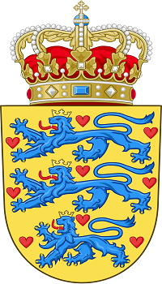 | 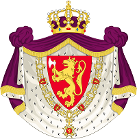 | 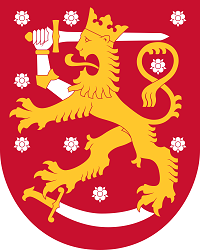 | 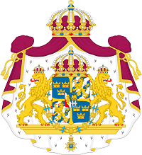 |
| Национальные символы | 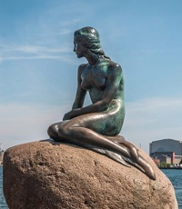 | 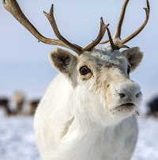 | 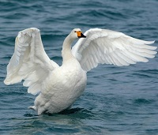 |
|
| Столица | Копенгаген | Осло | Хельсинки | Стокгольм |
| Краткое описание | Дания – скандинавское государство, расположенное на полуострове Ютландия и многочисленных близлежащих островах. Оно соседствует со Швецией и соединено с ней Эресуннским мостом. Копенгаген, столица Дании, славится своими королевскими дворцами, красочным районом старого порта Нюхавн, парком развлечений Тиволи и знаменитой статуей Русалочки. | Норве́гия, официальное название — Короле́вство Норве́гия — государство в Северной Европе, располагающееся в западной части Скандинавского полуострова и на огромном количестве прилегающих мелких островов, а также архипелаге Шпицберген, островах Ян-Майен и Медвежий в Северном Ледовитом океане. | Финляндия – страна в Северной Европе, граничащая со Швецией, Норвегией и Россией. Столица страны Хельсинки расположена на полуострове и прилегающих к нему островах Балтийского моря. В городе стоит побывать в морской крепости Свеаборг XVIII века, модном Дизайнерском квартале и многочисленных музеях. В огромной арктической провинции Лапландия, которая славится своими национальными парками и горнолыжными курортами, можно увидеть северное сияние. | Швеция – это государство в Скандинавии, география которого включает тысячи прибрежных островов и внутриматериковых озер, таежные леса и горы, покрытые ледниками. Все крупнейшие города – столица Стокгольм и расположенные на юго-востоке Гётеборг и Мальмё – являются приморскими. Стокгольм занимает 14 островов с более чем 50 мостами. Он известен средневековым районом Гамла-Стан (Старый город), а также королевскими дворцами и музеями, в числе которых музей под открытым небом Скансен. |
| Страны | Дания | Норвегия | Финляндия | Швеция |
| Nizhegorodtseva Olga JKTV22 2022.09.26 | ||||
| Источники | ||||
Страны мечты Страны мечты Страны мечты Страны мечты Страны мечты